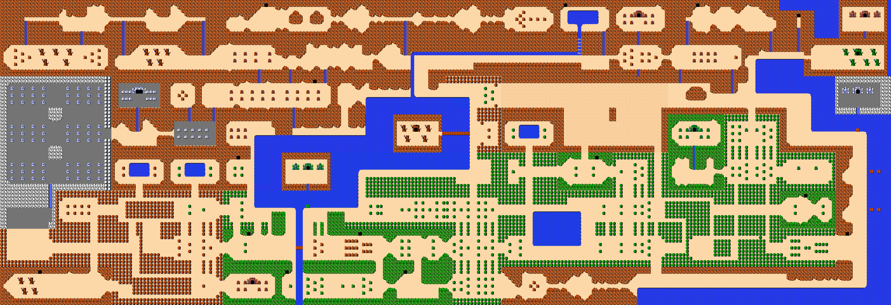
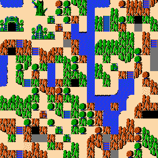
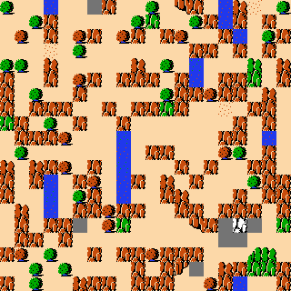
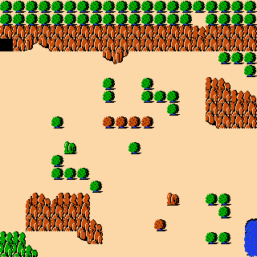

Zelda source

Corrective branch spec-completion-report from e4db319. KL direction is generated target P || source Q, natural logarithm, no smoothing; smaller is closer. N=1 pattern and decoded-tile metrics are mathematically identical and are deliberately repeated under explicit labels. Ordinary WFC is this repository's independent standard overlapping-WFC implementation, not Gumin's code. Generated outputs are finite/nonperiodic.
Verified Zelda N=3 policy: source pattern extraction wraps both axes; output constraints and output-edge metrics do not wrap. Existing nonwrapped extraction remains the default.
| example | N | heuristic | runs | wfc pattern frequency kl | sat pattern frequency kl | wfc pattern edge frequency kl | sat pattern edge frequency kl | wfc decoded tile frequency kl | sat decoded tile frequency kl | wfc decoded tile edge frequency kl | sat decoded tile edge frequency kl | wfc successes | sat successes |
|---|---|---|---|---|---|---|---|---|---|---|---|---|---|
| Stick | 1 | uniform | 100 | 0.2010846842237507 | 0.2010846842237507 | 0.566717484645524 | 0.566717484645524 | 0.2010846842237507 | 0.2010846842237507 | 0.566717484645524 | 0.566717484645524 | 100 | 100 |
| Stick | 1 | frequency | 100 | 0.00020102901257655105 | 0.00020102901257655105 | 0.0850506570922597 | 0.0850506570922597 | 0.00020102901257655105 | 0.00020102901257655105 | 0.0850506570922597 | 0.0850506570922597 | 100 | 100 |
| Stick | 1 | context | 100 | 0.0026080369709736324 | 0.0026080369709736324 | 0.0008374397430467918 | 0.0008374397430467918 | 0.0026080369709736324 | 0.0026080369709736324 | 0.0008374397430467918 | 0.0008374397430467918 | 100 | 100 |
| Zelda | 1 | uniform | 100 | 0.2913850877172263 | MISSING — one-seed pilot exceeded 90 seconds and was stopped; 100-run rerun not launched | 1.4665268859892502 | MISSING — one-seed pilot exceeded 90 seconds and was stopped; 100-run rerun not launched | 0.2913850877172263 | MISSING — one-seed pilot exceeded 90 seconds and was stopped; 100-run rerun not launched | 1.4665268859892502 | MISSING — one-seed pilot exceeded 90 seconds and was stopped; 100-run rerun not launched | 100 | MISSING — one-seed pilot exceeded 90 seconds and was stopped; 100-run rerun not launched |
| Zelda | 1 | frequency | 100 | 0.14111030154256854 | MISSING — one-seed pilot exceeded 90 seconds and was stopped; 100-run rerun not launched | 1.5374915608948967 | MISSING — one-seed pilot exceeded 90 seconds and was stopped; 100-run rerun not launched | 0.14111030154256854 | MISSING — one-seed pilot exceeded 90 seconds and was stopped; 100-run rerun not launched | 1.5374915608948967 | MISSING — one-seed pilot exceeded 90 seconds and was stopped; 100-run rerun not launched | 100 | MISSING — one-seed pilot exceeded 90 seconds and was stopped; 100-run rerun not launched |
| Zelda | 1 | context | 100 | 0.0411693331628234 | MISSING — one-seed pilot exceeded 90 seconds and was stopped; 100-run rerun not launched | 0.06535074795832634 | MISSING — one-seed pilot exceeded 90 seconds and was stopped; 100-run rerun not launched | 0.0411693331628234 | MISSING — one-seed pilot exceeded 90 seconds and was stopped; 100-run rerun not launched | 0.06535074795832634 | MISSING — one-seed pilot exceeded 90 seconds and was stopped; 100-run rerun not launched | 100 | MISSING — one-seed pilot exceeded 90 seconds and was stopped; 100-run rerun not launched |
| Stick | 1 | Plain SAT | 1 | N/A | 0.5018593443745004 | N/A | 0.9980429974661365 | N/A | 0.5018593443745004 | N/A | 0.9980429974661365 | N/A | 1 |
| Zelda | 3 | uniform | 0 | MISSING — no saved Zelda N=3 outputs; current 2,958-pattern SAT compiler scale is impractical | MISSING — no saved Zelda N=3 outputs; current 2,958-pattern SAT compiler scale is impractical | MISSING — no saved Zelda N=3 outputs; current 2,958-pattern SAT compiler scale is impractical | MISSING — no saved Zelda N=3 outputs; current 2,958-pattern SAT compiler scale is impractical | MISSING — no saved Zelda N=3 outputs; current 2,958-pattern SAT compiler scale is impractical | MISSING — no saved Zelda N=3 outputs; current 2,958-pattern SAT compiler scale is impractical | MISSING — no saved Zelda N=3 outputs; current 2,958-pattern SAT compiler scale is impractical | MISSING — no saved Zelda N=3 outputs; current 2,958-pattern SAT compiler scale is impractical | 0 | 0 |
| Zelda | 3 | frequency | 0 | MISSING — no saved Zelda N=3 outputs; current 2,958-pattern SAT compiler scale is impractical | MISSING — no saved Zelda N=3 outputs; current 2,958-pattern SAT compiler scale is impractical | MISSING — no saved Zelda N=3 outputs; current 2,958-pattern SAT compiler scale is impractical | MISSING — no saved Zelda N=3 outputs; current 2,958-pattern SAT compiler scale is impractical | MISSING — no saved Zelda N=3 outputs; current 2,958-pattern SAT compiler scale is impractical | MISSING — no saved Zelda N=3 outputs; current 2,958-pattern SAT compiler scale is impractical | MISSING — no saved Zelda N=3 outputs; current 2,958-pattern SAT compiler scale is impractical | MISSING — no saved Zelda N=3 outputs; current 2,958-pattern SAT compiler scale is impractical | 0 | 0 |
| Zelda | 3 | context | 0 | MISSING — no saved Zelda N=3 outputs; current 2,958-pattern SAT compiler scale is impractical | MISSING — no saved Zelda N=3 outputs; current 2,958-pattern SAT compiler scale is impractical | MISSING — no saved Zelda N=3 outputs; current 2,958-pattern SAT compiler scale is impractical | MISSING — no saved Zelda N=3 outputs; current 2,958-pattern SAT compiler scale is impractical | MISSING — no saved Zelda N=3 outputs; current 2,958-pattern SAT compiler scale is impractical | MISSING — no saved Zelda N=3 outputs; current 2,958-pattern SAT compiler scale is impractical | MISSING — no saved Zelda N=3 outputs; current 2,958-pattern SAT compiler scale is impractical | MISSING — no saved Zelda N=3 outputs; current 2,958-pattern SAT compiler scale is impractical | 0 | 0 |
| Zelda | 3 | Plain SAT | 0 | MISSING — no saved Zelda N=3 outputs; current 2,958-pattern SAT compiler scale is impractical | MISSING — no saved Zelda N=3 outputs; current 2,958-pattern SAT compiler scale is impractical | MISSING — no saved Zelda N=3 outputs; current 2,958-pattern SAT compiler scale is impractical | MISSING — no saved Zelda N=3 outputs; current 2,958-pattern SAT compiler scale is impractical | MISSING — no saved Zelda N=3 outputs; current 2,958-pattern SAT compiler scale is impractical | MISSING — no saved Zelda N=3 outputs; current 2,958-pattern SAT compiler scale is impractical | MISSING — no saved Zelda N=3 outputs; current 2,958-pattern SAT compiler scale is impractical | MISSING — no saved Zelda N=3 outputs; current 2,958-pattern SAT compiler scale is impractical | 0 | 0 |
| example | engine | heuristic | metric | mean | median | stdev | sample count | success count |
|---|---|---|---|---|---|---|---|---|
| Stick | ordinary WFC | uniform | decoded_tile_frequency_kl | 0.2015431050239787 | 0.20037769631454622 | 0.02148921901542965 | 100 | 100 |
| Stick | ordinary WFC | uniform | decoded_tile_edge_frequency_kl | 0.569224314457957 | 0.565092676487156 | 0.0638484098086624 | 100 | 100 |
| Stick | ordinary WFC | frequency | decoded_tile_frequency_kl | 0.0011218389987664094 | 0.000424573486784062 | 0.0016141002260417613 | 100 | 100 |
| Stick | ordinary WFC | frequency | decoded_tile_edge_frequency_kl | 0.08765153266921147 | 0.08693662092265496 | 0.012399846492906078 | 100 | 100 |
| Stick | ordinary WFC | context | decoded_tile_frequency_kl | 0.005983862603782252 | 0.002841430142510995 | 0.007618310353817358 | 100 | 100 |
| Stick | ordinary WFC | context | decoded_tile_edge_frequency_kl | 0.007587825725681239 | 0.004664289305705414 | 0.009513589302271124 | 100 | 100 |
| Stick | WFC-as-SAT | uniform | decoded_tile_frequency_kl | 0.2015431050239787 | 0.20037769631454622 | 0.02148921901542965 | 100 | 100 |
| Stick | WFC-as-SAT | uniform | decoded_tile_edge_frequency_kl | 0.569224314457957 | 0.565092676487156 | 0.0638484098086624 | 100 | 100 |
| Stick | WFC-as-SAT | frequency | decoded_tile_frequency_kl | 0.0011218389987664094 | 0.000424573486784062 | 0.0016141002260417613 | 100 | 100 |
| Stick | WFC-as-SAT | frequency | decoded_tile_edge_frequency_kl | 0.08765153266921147 | 0.08693662092265496 | 0.012399846492906078 | 100 | 100 |
| Stick | WFC-as-SAT | context | decoded_tile_frequency_kl | 0.005983862603782252 | 0.002841430142510995 | 0.007618310353817358 | 100 | 100 |
| Stick | WFC-as-SAT | context | decoded_tile_edge_frequency_kl | 0.007587825725681239 | 0.004664289305705414 | 0.009513589302271124 | 100 | 100 |
| Stick | Plain SAT/CDCL | solver | decoded_tile_frequency_kl | 0.5018593443745004 | 0.5018593443745004 | 0 | 1 | 1 |
| Stick | Plain SAT/CDCL | solver | decoded_tile_edge_frequency_kl | 0.9980429974661365 | 0.9980429974661365 | 0 | 1 | 1 |
| Zelda | ordinary WFC | uniform | decoded_tile_frequency_kl | 0.48001731639199646 | 0.45457016690230145 | 0.1424022558946184 | 100 | 100 |
| Zelda | ordinary WFC | uniform | decoded_tile_edge_frequency_kl | 1.8826964805602906 | 1.8657179299075406 | 0.15396725101780248 | 100 | 100 |
| Zelda | ordinary WFC | frequency | decoded_tile_frequency_kl | 0.17907686346414578 | 0.17739755964764758 | 0.018859578940285598 | 100 | 100 |
| Zelda | ordinary WFC | frequency | decoded_tile_edge_frequency_kl | 1.6483157065759793 | 1.6471558729350901 | 0.08547698362165057 | 100 | 100 |
| Zelda | ordinary WFC | context | decoded_tile_frequency_kl | 0.5528140891790838 | 0.44344486114121706 | 0.30641511236574315 | 100 | 100 |
| Zelda | ordinary WFC | context | decoded_tile_edge_frequency_kl | 0.7458844947332548 | 0.615127421456811 | 0.3385652925268298 | 100 | 100 |
Raw values: per-run.csv. Pooled values are in the main table and are not means of per-run KL.
| example | N | engine | heuristic | runs | average runtime seconds | median runtime seconds | runtime stdev seconds | peak memory | average conflicts | average backtracks | successes | failures |
|---|---|---|---|---|---|---|---|---|---|---|---|---|
| Stick | 1 | Plain SAT/CDCL | solver | 1 | 0.02516468599999655 | 0.02516468599999655 | 0.0 | NOT MEASURED | 0 | 0 | 1 | 0 |
| Stick | 1 | WFC-as-SAT | context | 100 | 0.09842459097999993 | 0.09799849249999948 | 0.003931684091526977 | NOT MEASURED | 0 | 0 | 100 | 0 |
| Stick | 1 | WFC-as-SAT | frequency | 100 | 0.09404255446999986 | 0.09363495900000096 | 0.0032836744393348995 | NOT MEASURED | 0 | 0 | 100 | 0 |
| Stick | 1 | WFC-as-SAT | uniform | 100 | 0.07666878620000002 | 0.07620347450000153 | 0.0027369206105151917 | NOT MEASURED | 0 | 0 | 100 | 0 |
| Stick | 1 | ordinary WFC | context | 100 | 0.09710459345999968 | 0.09667033349999832 | 0.004433330576398329 | NOT MEASURED | N/A | 0 | 100 | 0 |
| Stick | 1 | ordinary WFC | frequency | 100 | 0.09448340776999978 | 0.09457302000000034 | 0.0022615201480495934 | NOT MEASURED | N/A | 0 | 100 | 0 |
| Stick | 1 | ordinary WFC | uniform | 100 | 0.07219252916000023 | 0.07224559299999989 | 0.0020810485822514166 | NOT MEASURED | N/A | 0 | 100 | 0 |
| Zelda | 1 | ordinary WFC | context | 100 | 0.6478248052199987 | 0.644596302000009 | 0.04327331585748075 | NOT MEASURED | N/A | 0 | 100 | 0 |
| Zelda | 1 | ordinary WFC | frequency | 100 | 0.6909816158699988 | 0.6827869399999997 | 0.039066430659592574 | NOT MEASURED | N/A | 0 | 100 | 0 |
| Zelda | 1 | ordinary WFC | uniform | 100 | 0.5024896412100003 | 0.49174158100000653 | 0.04903775748869166 | NOT MEASURED | N/A | 0 | 100 | 0 |
Stick is complete and reproduces the paper approximately. Zelda 1x1 ordinary WFC is complete for 100 seeds; matched SAT is missing after the measured pilot. Zelda 3x3 is not generated.
For Stick, all 100 matched output grids are exactly identical for uniform, frequency, and context because no conflicts/backtracks occurred. This is stronger than aggregate similarity but applies only to the conflict-free case. Benchmark conflict cases differ; SAT CDCL can recover where stop-on-contradiction WFC fails.
| example | N | engine | heuristic | axis | lag | pooled kl | per run mean | per run median | per run stdev | sample count | finite count | infinite count |
|---|---|---|---|---|---|---|---|---|---|---|---|---|
| Zelda | 1 | ordinary WFC | uniform | horizontal | 1 | 1.7000853226996402 | 2.167723236648199 | 2.128792972057928 | 0.2193739894519563 | 100 | 100 | 0 |
| Zelda | 1 | ordinary WFC | uniform | horizontal | 2 | inf | inf | inf | 0 | 100 | 0 | 100 |
| Zelda | 1 | ordinary WFC | uniform | horizontal | 4 | inf | inf | inf | 0 | 100 | 0 | 100 |
| Zelda | 1 | ordinary WFC | uniform | horizontal | 8 | inf | inf | inf | 0 | 100 | 0 | 100 |
| Zelda | 1 | ordinary WFC | uniform | horizontal | 16 | inf | inf | inf | 0 | 100 | 0 | 100 |
| Zelda | 1 | ordinary WFC | uniform | vertical | 1 | 1.2329543312704618 | 1.5976556064639833 | 1.5795641104272895 | 0.13951135341825896 | 100 | 100 | 0 |
| Zelda | 1 | ordinary WFC | uniform | vertical | 2 | inf | inf | inf | 0 | 100 | 0 | 100 |
| Zelda | 1 | ordinary WFC | uniform | vertical | 4 | inf | inf | inf | 0 | 100 | 0 | 100 |
| Zelda | 1 | ordinary WFC | uniform | vertical | 8 | inf | inf | inf | 0 | 100 | 0 | 100 |
| Zelda | 1 | ordinary WFC | uniform | vertical | 16 | inf | inf | inf | 0 | 100 | 0 | 100 |
| Zelda | 1 | ordinary WFC | frequency | horizontal | 1 | 1.4347686558140769 | 1.5578299199680474 | 1.5663776193683856 | 0.104715358946771 | 100 | 100 | 0 |
| Zelda | 1 | ordinary WFC | frequency | horizontal | 2 | inf | inf | inf | 0 | 100 | 0 | 100 |
| Zelda | 1 | ordinary WFC | frequency | horizontal | 4 | inf | inf | inf | 0 | 100 | 0 | 100 |
| Zelda | 1 | ordinary WFC | frequency | horizontal | 8 | inf | inf | inf | 0 | 100 | 0 | 100 |
| Zelda | 1 | ordinary WFC | frequency | horizontal | 16 | inf | 1.008207561928459 | 1.0223984614822492 | 0.10854708138657759 | 100 | 19 | 81 |
| Zelda | 1 | ordinary WFC | frequency | vertical | 1 | 1.640200347967325 | 1.7387873751755119 | 1.7364626277464867 | 0.12347109350126473 | 100 | 100 | 0 |
| Zelda | 1 | ordinary WFC | frequency | vertical | 2 | inf | inf | inf | 0 | 100 | 0 | 100 |
| Zelda | 1 | ordinary WFC | frequency | vertical | 4 | inf | inf | inf | 0 | 100 | 0 | 100 |
| Zelda | 1 | ordinary WFC | frequency | vertical | 8 | inf | 0.7263229144639848 | 0.7263229144639848 | 0 | 100 | 1 | 99 |
| Zelda | 1 | ordinary WFC | frequency | vertical | 16 | inf | 0.899695620503235 | 0.9024411416639606 | 0.08760698755182535 | 100 | 25 | 75 |
| Zelda | 1 | ordinary WFC | context | horizontal | 1 | 0.06845125106073956 | 0.7547024063387187 | 0.6387456319553115 | 0.34708789534806256 | 100 | 100 | 0 |
| Zelda | 1 | ordinary WFC | context | horizontal | 2 | inf | 1.026144950671592 | 0.9987279393349437 | 0.39227580011361163 | 100 | 4 | 96 |
| Zelda | 1 | ordinary WFC | context | horizontal | 4 | inf | 1.113274449769263 | 1.113274449769263 | 0 | 100 | 1 | 99 |
| Zelda | 1 | ordinary WFC | context | horizontal | 8 | inf | 1.461989478184533 | 1.461989478184533 | 0 | 100 | 1 | 99 |
| Zelda | 1 | ordinary WFC | context | horizontal | 16 | inf | 1.953932135794496 | 1.6067421946289286 | 0.8009584804316315 | 100 | 12 | 88 |
| Zelda | 1 | ordinary WFC | context | vertical | 1 | 0.06223612684751481 | 0.7370524651193924 | 0.6090427494883566 | 0.33584462575257534 | 100 | 100 | 0 |
| Zelda | 1 | ordinary WFC | context | vertical | 2 | inf | inf | inf | 0 | 100 | 0 | 100 |
| Zelda | 1 | ordinary WFC | context | vertical | 4 | inf | 1.3201251988141034 | 1.3201251988141034 | 0 | 100 | 1 | 99 |
| Zelda | 1 | ordinary WFC | context | vertical | 8 | inf | 1.3859411131185775 | 1.3859411131185775 | 0 | 100 | 1 | 99 |
| Zelda | 1 | ordinary WFC | context | vertical | 16 | inf | 2.021479103236545 | 1.87843851434086 | 0.6092667967338586 | 100 | 19 | 81 |
r=32 is unavailable by definition on a 20x20 output. Zelda N=3 lag-r remains missing.
| benchmark | engine | decision | seed | pattern size | placement grid | success | runtime seconds | contradictions |
|---|---|---|---|---|---|---|---|---|
| simple-knot | ordinary-wfc | frequency | 0 | 3 | 8x8 | False | 0.0010712549999999932 | 1 |
| simple-knot | wfc-as-sat | frequency | 0 | 3 | 8x8 | True | 0.150843995 | |
| simple-knot | ordinary-wfc | context | 0 | 3 | 8x8 | False | 0.0011016190000000536 | 1 |
| simple-knot | wfc-as-sat | context | 0 | 3 | 8x8 | True | 0.146627085 | |
| cat | ordinary-wfc | frequency | 0 | 3 | 8x8 | True | 0.05775202400000001 | 0 |
| cat | wfc-as-sat | frequency | 0 | 3 | 8x8 | True | 1.8001733790000003 | |
| cat | ordinary-wfc | context | 0 | 3 | 8x8 | True | 0.06630876100000016 | 0 |
| cat | wfc-as-sat | context | 0 | 3 | 8x8 | True | 1.728590960000001 | |
| chess | ordinary-wfc | frequency | 0 | 3 | 8x8 | True | 0.0008191120000002883 | 0 |
| chess | wfc-as-sat | frequency | 0 | 3 | 8x8 | True | 0.0008804189999995771 | |
| chess | ordinary-wfc | context | 0 | 3 | 8x8 | True | 0.0015428590000006182 | 0 |
| chess | wfc-as-sat | context | 0 | 3 | 8x8 | True | 0.0008448610000009182 | |
| knot | ordinary-wfc | frequency | 0 | 3 | 8x8 | True | 0.022251826999999835 | 0 |
| knot | wfc-as-sat | frequency | 0 | 3 | 8x8 | True | 0.2521046140000003 | |
| knot | ordinary-wfc | context | 0 | 3 | 8x8 | True | 0.021094696000000468 | 0 |
| knot | wfc-as-sat | context | 0 | 3 | 8x8 | True | 0.24473813800000066 | |
| simple-maze | ordinary-wfc | frequency | 0 | 3 | 8x8 | False | 0.00037149399999947263 | 1 |
| simple-maze | wfc-as-sat | frequency | 0 | 3 | 8x8 | False | 0.0021834900000001767 | |
| simple-maze | ordinary-wfc | context | 0 | 3 | 8x8 | False | 0.0004496500000001902 | 1 |
| simple-maze | wfc-as-sat | context | 0 | 3 | 8x8 | False | 0.0023080770000003525 | |
| simple-wall | ordinary-wfc | frequency | 0 | 3 | 8x8 | True | 0.0069170130000006935 | 0 |
| simple-wall | wfc-as-sat | frequency | 0 | 3 | 8x8 | True | 0.04398356300000117 | |
| simple-wall | ordinary-wfc | context | 0 | 3 | 8x8 | True | 0.0076515859999997105 | 0 |
| simple-wall | wfc-as-sat | context | 0 | 3 | 8x8 | True | 0.043079045000000704 |
These are repository-configured N=3, 8x8-placement seed-0 diagnostics, not primary distribution estimates. Simple Maze is a genuinely UNSAT SAT encoding in this configuration; ordinary-WFC contradiction is separately a search failure.


Uncurated seed 0.

Uncurated seed 0.

Uncurated seed 0.
| section | requirement | status | evidence | notes |
|---|---|---|---|---|
| 5-7 | WFC/SAT heuristic conditions, freq(x,c), SAT restoration | COMPLETE | implementation and automated tests | Zelda pilot exposed and fixed skipped-level synchronization |
| 8,11 | Overlapping 3x3 and four distinct KL measures | PARTIAL | results.csv retains all four columns | periodic extraction implemented/tested; no N=3 generations |
| 9 | Matched WFC vs WFC-as-SAT validation | PARTIAL | Stick rows and raw-runs.json | Stick complete; Zelda SAT missing |
| 10 | Stick 100x20x20 | COMPLETE | main table / core-comparison/raw-runs.json | all conditions; Plain SAT deterministic once |
| 10 | Zelda 1x1 100x20x20 | PARTIAL | main table / raw/zelda-1x1.json | ordinary WFC complete; SAT pilot too costly |
| 10 | Zelda overlapping 3x3 100x20x20 | NOT DONE | main table | no saved outputs; compiler scale blocker |
| 12 | Pooled and per-run statistics | PARTIAL | statistical table / per-run.csv | complete for generated primary arms |
| 13 | Zelda 1x1 and 3x3 lag-r | PARTIAL | lag-r table / raw/zelda-1x1-lag-r.json | Zelda 1x1 WFC r1-16; r32 impossible on 20x20; N3 missing |
| 14 | Contradictions and failures | COMPLETE | performance.csv and benchmark table | failures retained; Simple Maze SAT UNSAT distinguished |
| 15 | Lexical selection and anisotropy | COMPLETE | scope and lag-r axes | horizontal/vertical separate |
| 17 | Plain SAT baseline | PARTIAL | Stick main table | deterministic Stick characterized; Zelda missing |
| 18 | Runtime and peak memory | PARTIAL | performance table | runtime complete where run; peak RSS NOT MEASURED |
| 19 | Repository benchmark suite | PARTIAL | benchmark table / meeting-report raw data | six inputs, seed 0 only; diagnostic rather than distribution |
| 20 | One-command script | PARTIAL | run_context_sensitive_experiments.sh | existing Stick/benchmark driver; does not complete Zelda |
| 21 | Reproducibility metadata | PARTIAL | raw JSON metadata | strong for Stick/Zelda; benchmark metadata incomplete |
| 22 | Resemblance and performance tables | COMPLETE | results.csv / performance.csv | missing values retained explicitly |
| 23 | Automated correctness tests | COMPLETE | tests | context, fallback, undo/backtrack, extraction, CNF equivalence |
| 25 | Required work sequence/documentation | PARTIAL | this compliance table | phases with missing Zelda remain incomplete |
python -m unittest tests.test_pattern_semantics tests.test_cnf_semantics tests.test_sat_context_heuristics python experiments/context_sensitive/zelda_experiment.py --runs 100 --engine ordinary python experiments/context_sensitive/detailed_report.py open context-sensitive-results/detailed-comparison/index.html